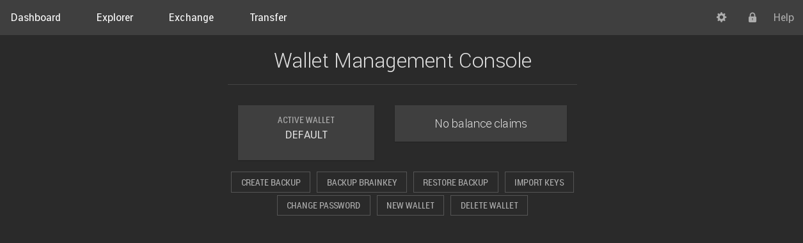
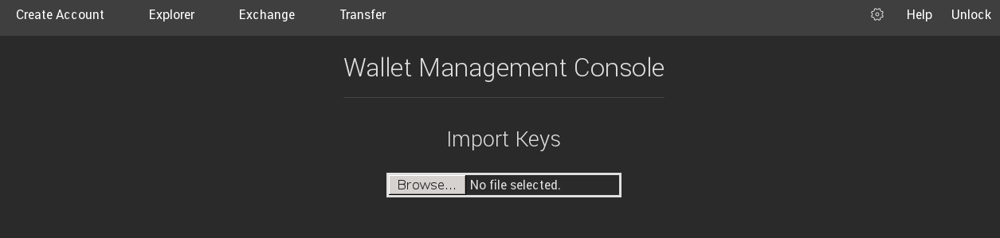
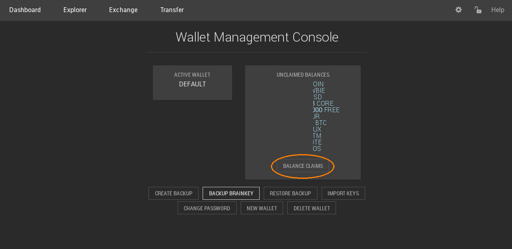

Importing Your Wallet¶
Web Wallet¶
The web wallet of BitShares 2.0 has a Wallet management Console. that will help you import your funds. It can be access via BitShares 2.0: Settings -> Wallets
{kind=link}
In order to import your existing accounts and claim all your funds you need to
choose Import Keys.
Note
If loading the file files with invalid format please ensure that
you have followed the steps described Exporting Your Wallet and make
sure to click Import Keys and not Restore Backup.
{kind=link}
Here you can provide the wallet backup file produced from BitShares 0.9.3c and the pass phrase. Depending on the size of your import file, this step may take some time to auto-complete. Please be patient.
{kind=link}
The wallet will list all of your accounts including the number of private keys
stored in the account names accordingly. The more often you have used your
account, the higher this number should be. Confirm by pressing Import.
{kind=link}
The wallet management console will now give an overview over unclaimed balances.
{kind=link}
If you click on Balance Claim you will be brought to this screen.

You are asked to define where to put your individual balances if you have multiple accounts.
After confirming all required steps, your accounts and the balances should appear accordingly.
Note
After importing your accounts and balances, we recommend to make a new backup of your wallet that will then contain access to your newly imported accounts and corresponding balances.
CLI wallet¶
The wallet backup file can be imported by
>>> import_accounts <path to exported json> <password of wallet you exported from>
Note that this doesn’t automatically claim the balances.
Claiming Balances¶
For each account <my_account_name> in your wallet (run list_my_accounts to see them)::
>>> import_account_keys /path/to/keys.json <my_password> <my_account_name> <my_account_name>
Note
In the release tag, this will create a full backup of the wallet after every key it imports. If you have thousands of keys, this is quite slow and also takes up a lot of disk space. Monitor your free disk space during the import and, if necessary, periodically erase the backups to avoid filling your disk. The latest code only saves your wallet after all keys have been imported.
The command above will only import your keys into the wallet and will not claim your funds. In order to claim the funds you need to execute::
>>> import_balance <my_account_name> ["*"] true
Note
If you would like to preview this claiming transaction, you can
replace the true with a false. That way, the transaction will not be
broadcast.
To verify the results, you can run::
>>> list_account_balances <my_account_name>
Manually claim balances¶
Balances can be imported one by one. The proper syntax to do so is:
>>> import_balance <account name> <private key> true
But I always import my accounts and then use the GUI to import my balances cause it’s way easier.